五個面向對照
換濾心、進出口、安裝、看壽命、濾心：每一欄 10 款都不重複。
| 款式 | 換濾心 | 進出口 | 安裝 | 看壽命 | 濾心 | 主材料 | 額定流量 L/min | 乾淨壓損 bar，20 °C 水／10 °C PG25 | 外形 W×D×H mm | 乾重 |
|---|---|---|---|---|---|---|---|---|---|---|
| P01卡口快換型 | ¼ 圈卡口＋鎖扣滑塊 | G¾ 內牙，同軸對穿 | 頭座壁掛 | 磁性差壓指示器（紅色記憶） | C10 10 吋 | PP-GF30 | 10 | 0.122／0.335 | 164×144×365 | 1.5 kg |
| P02免開殼膠囊型 | 免開殼，膠囊插入自閉閥座 | Ø12 快插／UQD04 | DIN 軌／0U 立柱 | 累積流量計＋日期標籤 | C48 膠囊 | PPSU | 4 | 0.218／0.479 | 135×82×269 | 0.43 kg |
| P03雙聯不停機型 | 雙杯旋入＋旋轉閥切換 | G1 活接，尾件可換 | SS316 落地框架 | 膜片差壓錶 0–1 bar | C10 10 吋 × 2 | PVDF／PP-GF30 | 15 | 0.219／0.539 | 320×266×855 | 13.6 kg |
| P04頂開蓋型 | 頂部手輪蓋 ⅓ 圈＋排氣閥連鎖 | 底部 G¾ 外牙活接 | 落地三腳座 | 進口壓力錶＋刻度環 | C10 10 吋 | PP-GF30／PPSU 蓋 | 20 | 0.272／0.698 | 349×302×526 | 3.5 kg |
| P05衛生卡箍型 | DN80 衛生卡箍 | DN25 衛生卡箍 | 管段抱箍＋C 型鋼 | 差壓開關乾接點 | C10 DOE | PVDF | 20 | 0.22／0.65 | 260×150×403 | 3.96 kg |
| P06機架抽屜型 | 鉸鏈門蓋＋偏心凸輪扳把 | 前面板 UQD08 | 19 吋 3U 抽屜 | 電子差壓＋流量＋NFC | C10 臥裝 | PPSU | 15 | 0.293／0.616 | 483×584×133 | 9.2 kg |
| P07反洗延壽型 | 活接旋環（杯體不轉） | 19 mm 倒鉤＋G½ 排污 | 壁掛板 | 反洗前後差壓恢復量 | C10 10 吋 | PP-GF30／PPS-GF40 | 10 | 0.152／0.369 | 238×216×599 | 6.5 kg |
| P08槽內沉入型 | 無壓力殼，鋼絲提把 | 槽頂 G¾ 外牙出口 | 儲液槽頂 | 複合真空錶 | C10 吊掛 | PP-H | 15 | 0.175／0.494 | 158×182×489 | 1.33 kg |
| P09面板模組型 | 3 個肘節扣 | G1½ 活接，尾件可換 | 預裝壁掛背板 | 浮子流量計（70 % 換） | CMG 10 吋 | PP-GF30／PP-H | 10 | 0.19／0.40 | 590×161×698 | 7.1 kg |
| P10扁平並聯型 | 4 支膠囊，各一把凸輪扳把 | G½ 內牙，可串接 | 扁平盒 85.5 mm 高 | 差壓錶＋每支轉子視窗 | C48 × 4 | PPSU | 16 | 0.263／0.541 | 319×355×85.5 | 4.49 kg |
乾淨壓損為額定流量下接頭到接頭的計算值；10 °C PG25（丙二醇 25 %）是黏度最高的冷啟動情況。CMG 與 C48 濾心耐溫 40 °C，用在 P02、P03、P09、P10 時只裝在供水側。
10 張設計圖紙
每款：外觀、剖面、爆炸圖、關鍵機構、規格與組立圖。
壁掛 · C10 · 10 L/min
卡口快換型
杯體對準缺口上推、轉 86°，三組斜坡把杯體拉入，彈簧滑塊自動鎖住；有壓力時推不動杯體，不會帶壓誤開。
- 換濾心
- ¼ 圈三凸耳卡口加杯側彈簧鎖扣滑塊；徑向 O-ring 密封，不靠鎖緊扭力
- 進出口
- 頭座同軸對穿 G¾ 內牙（ISO 228-1），EPDM 平墊端面密封
- 安裝
- 頭座一體壁掛支架，4 × ⌀6.6
- 看壽命
- 磁性活塞差壓指示器，綠／黃／紅（0.35／0.7 bar）；紅色機械記憶，按鈕復歸
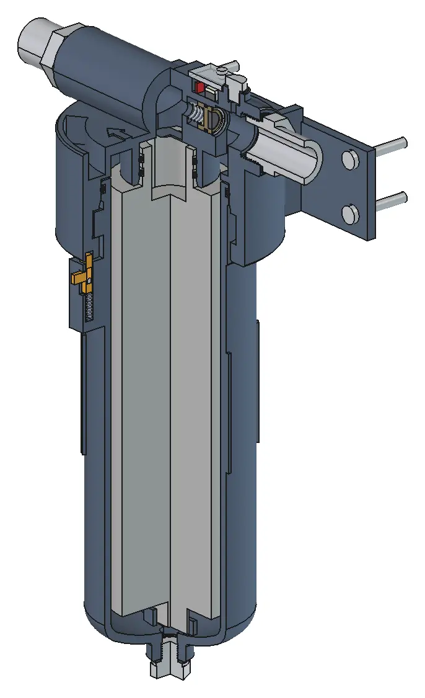
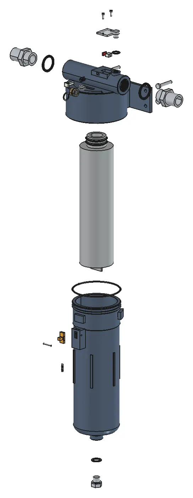
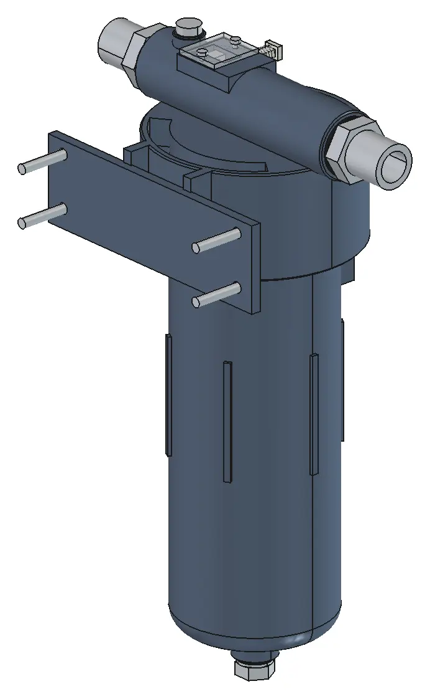
| 濾心 | 膜淨 C10 10 吋 PES 0.2 µm（2-222／鰭尾） |
|---|---|
| 主材料 | PP-GF30（頭座、杯體） |
| 額定流量 | 10 L/min |
| 乾淨壓損 | 0.122 bar（20 °C 水）／0.335 bar（10 °C PG25） |
| 外形 W×D×H | 164 × 144 × 365 mm |
| 乾重 | 約 1.5 kg |
| 零件 | 客製 8／標準 14／外購 5 |
| 工程圖 | 9 張 |
| 強度手算 | 最弱為凸耳根部彎曲（65 °C 長期 SF 1.15）；推估爆破約 57 bar |
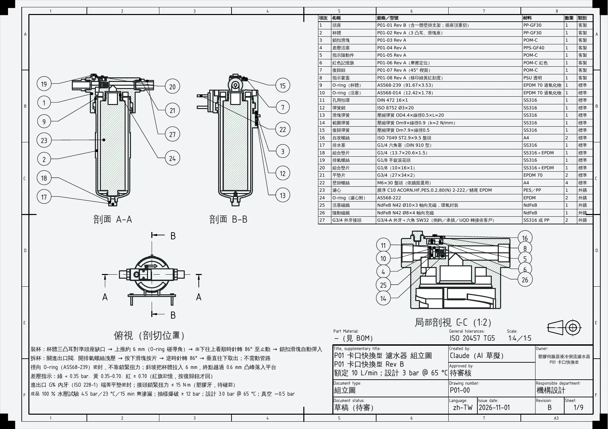
DIN 軌 · C48 · 4 L/min
免開殼膠囊型
整支 C48 膠囊像插卡一樣插進兩個自閉閥端座；拉一下鎖扣、把進水座往下滑 33 mm 就能取下，不開殼、不碰 O-ring、不必關管路閥。
- 換濾心
- 不開殼：膠囊兩端 Ø12 插管插入 PPSU 自閉閥端座；進水座沿 T 槽滑動，彈簧鎖扣兩段定位；出水座另加止回閥芯
- 進出口
- Ø12 快插（PP），可選配 OCP UQD04
- 安裝
- TS35 DIN 軌彈簧扣片，或 0U 立柱掛鈕
- 看壽命
- 出口機械式累積流量計加安裝日期標籤；讀數到標籤上的更換值就換
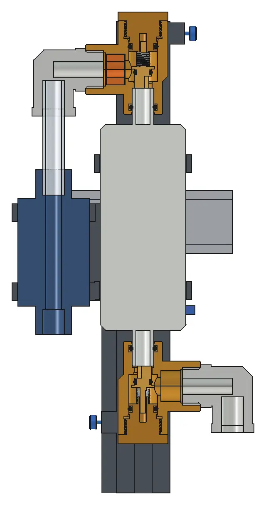
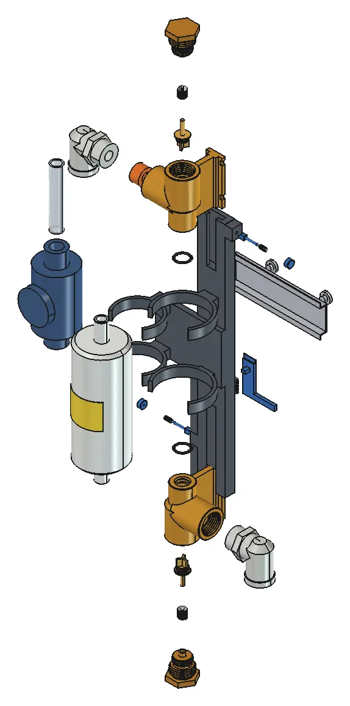
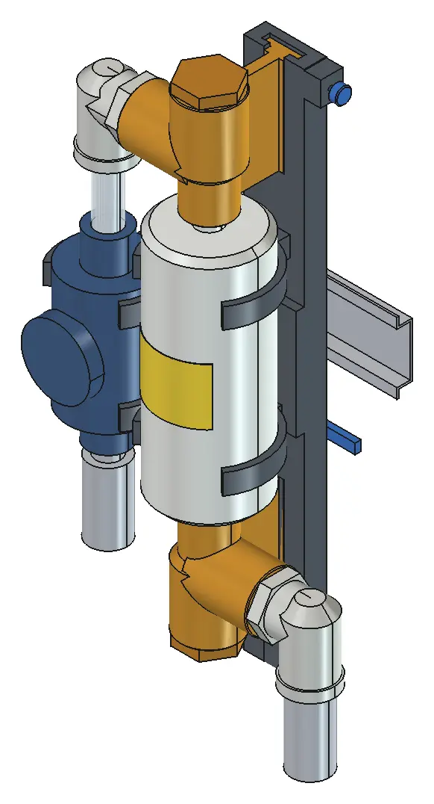
| 濾心 | 膜淨 C48 膠囊 Ø48 × 115（≤ 40 °C，只裝供水側） |
|---|---|
| 主材料 | PPSU（端座、閥芯） |
| 額定流量 | 4 L/min |
| 乾淨壓損 | 0.218 bar（20 °C 水）／0.479 bar（10 °C PG25） |
| 外形 W×D×H | 135 × 82 × 269 mm |
| 乾重 | 431 g |
| 零件 | 客製 7 種 12 件／標準 5 種 11 件／外購 8 種 10 件 |
| 工程圖 | 8 張 |
| 強度手算 | 頂推爪挫屈 SF 7.6；3 bar 時端座分離力 40.5 N |
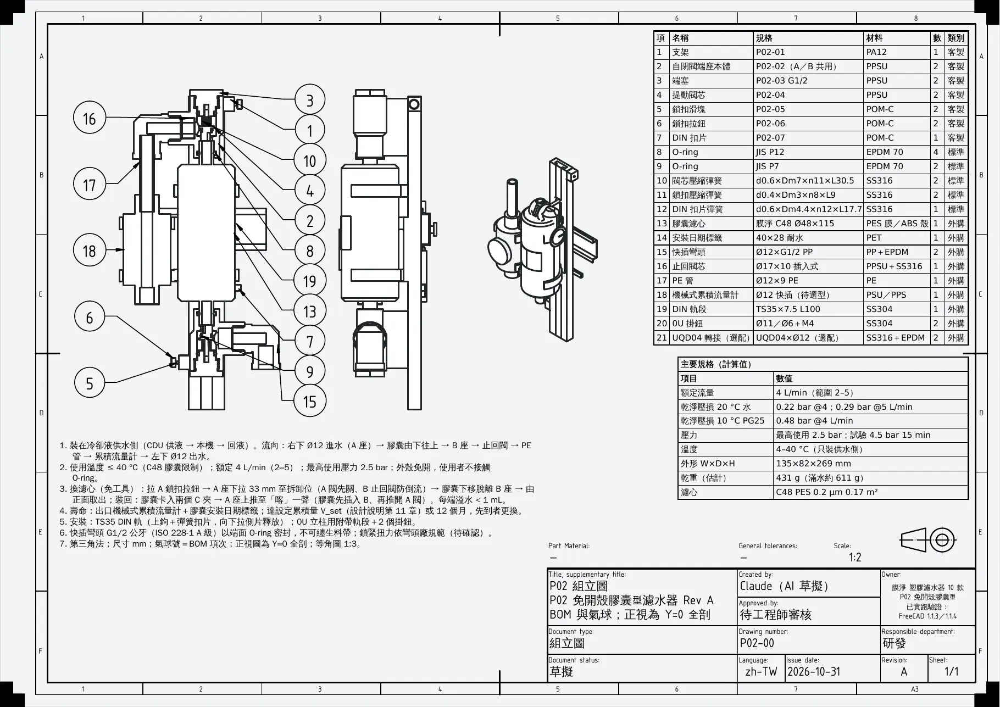
落地 · C10 × 2 · 15 L/min
雙聯不停機型
PVDF 歧管掛兩支旋入式杯體，中央一根旋轉閥桿同時切換進水層與出水層；平時一杯運轉，換濾心時把把手轉到另一側，離線那杯洩壓後旋下，系統不停機。
- 換濾心
- 兩支杯體各自旋入：雙線鋸齒牙（P 4、Ph 8，約 1.4 圈到止擋），徑向 O-ring AS568-236 密封，不靠鎖緊力；中央旋轉閥 A／A+B／B 三段定位，離線側先洩壓再旋下
- 進出口
- 共同進出口各一個 G1 外牙（ISO 228-1）加 PVDF 活接螺母，尾件可換（G1×G¾，端面 O-ring）
- 安裝
- 落地 SS316 3 mm 背板加底板與加強肋，歧管以 4 × M6 鎖入熱壓嵌件
- 看壽命
- 指針式膜片差壓錶 0–1 bar 接共同進出口，讀運轉中那一支的壓差；純機械、不需電源
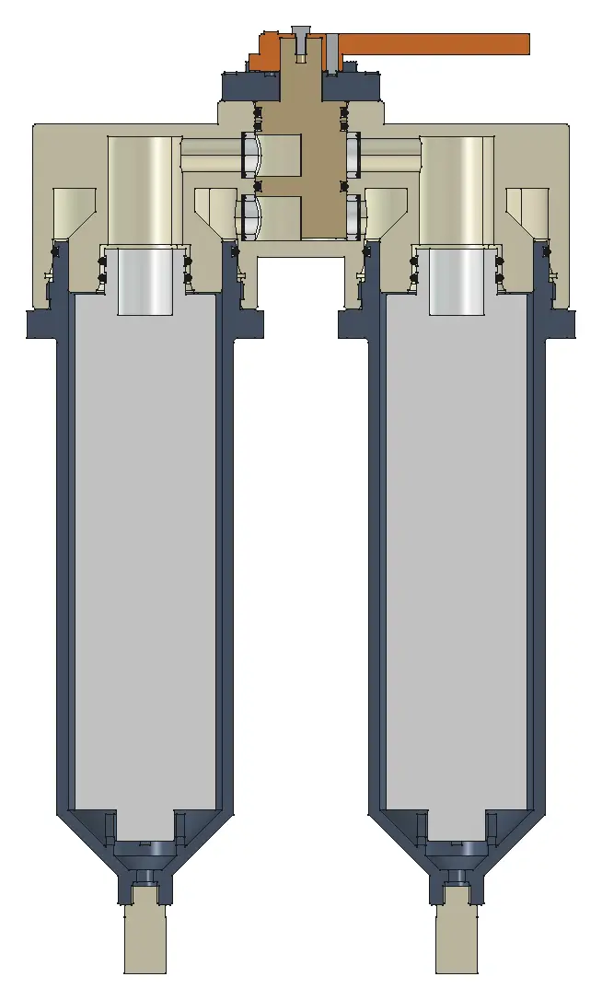
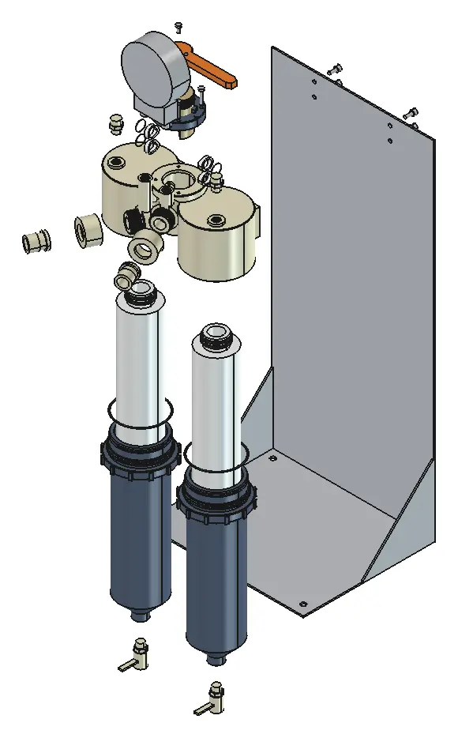
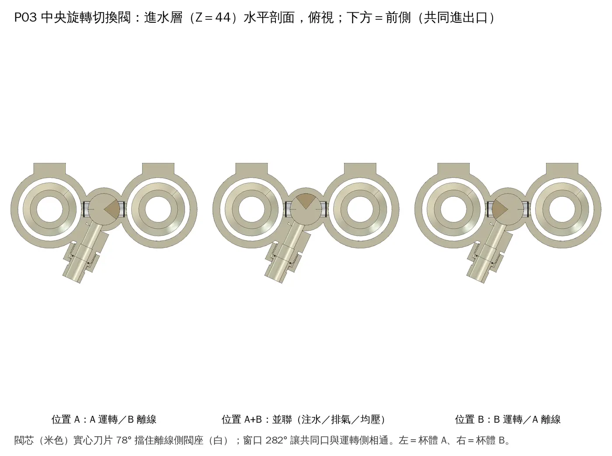
| 濾心 | 膜淨 C10 10 吋 × 2（222／鰭尾，10–65 °C）；選配 CMG 5 吋（≤ 40 °C、建議 ≤ 12 L/min） |
|---|---|
| 主材料 | 歧管 PVDF；杯體 PP-GF30；閥芯 PPS-GF40；閥座 PTFE-GF25；框架 SS316 |
| 額定流量 | 15 L/min（單杯運轉，換濾心時另一杯承擔全流量） |
| 乾淨壓損 | 單杯 0.219 bar（20 °C 水）／0.539 bar（10 °C PG25）；A+B 並聯 0.108／0.268 |
| 外形 W×D×H | 320 × 266 × 855 mm |
| 乾重 | 約 13.6 kg |
| 零件 | 客製 11（7 項）／標準 25（9 項）／外購 15（7 項） |
| 工程圖 | 8 張 |
| 強度手算 | 最弱為杯體錐底（65 °C 長期 SF 1.17；12 bar 爆破 SF 4.09）；切換扭力 5.2 N·m |
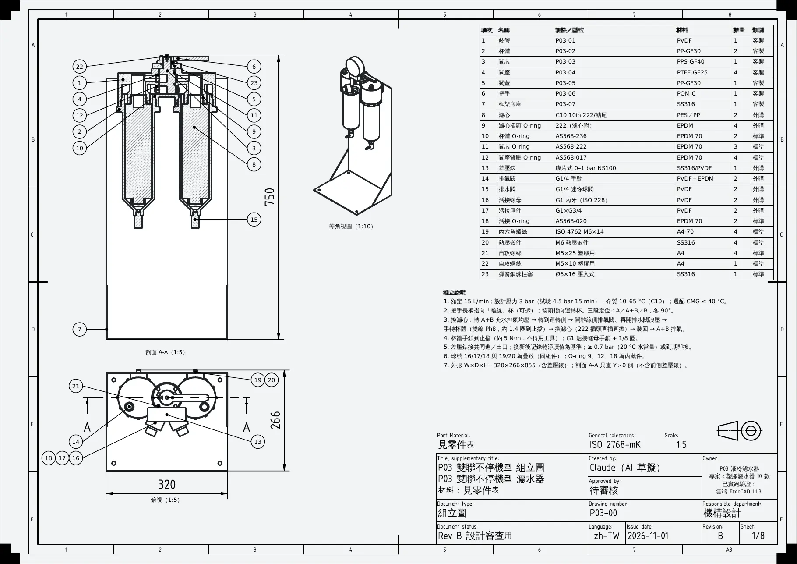
落地 · C10 · 20 L/min
頂開蓋型
進出水管都接在本體下方，換濾心只要從頂部把透明手輪蓋轉開 ⅓ 圈；蓋頂排氣閥的把手兼作連鎖，不先洩壓就轉不開。
- 換濾心
- 透明手輪蓋配雙線梯形牙 Tr106×12(P6)，轉 ⅓ 圈；徑向 O-ring AS568-236；排氣閥把手卡住本體凹槽形成連鎖
- 進出口
- 本體下方 2 × G¾ 外牙加平面活接螺母；側下切線進水、杯底中心出水
- 安裝
- 落地三腳座（可選壁掛鞍座）
- 看壽命
- 進口壓力錶加試車時設定的紅綠刻度環；透明蓋可直接看濾心
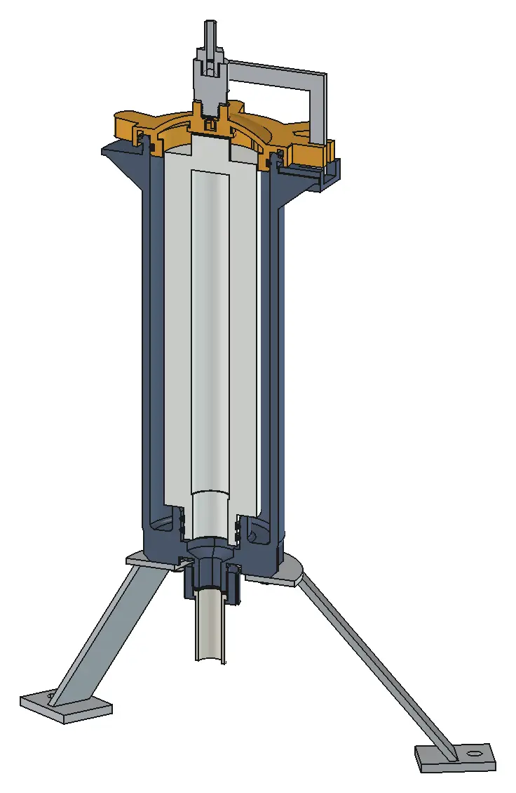
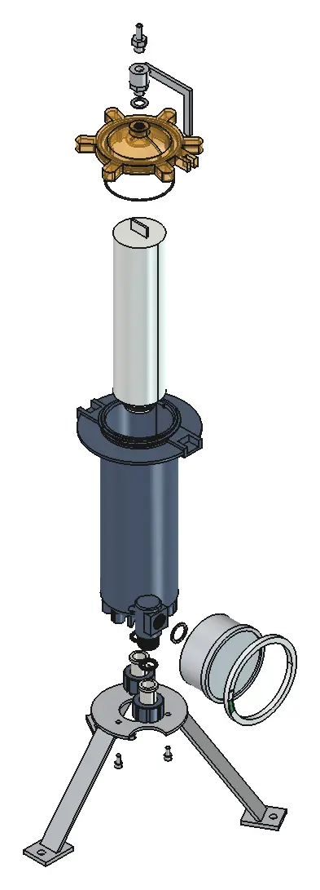
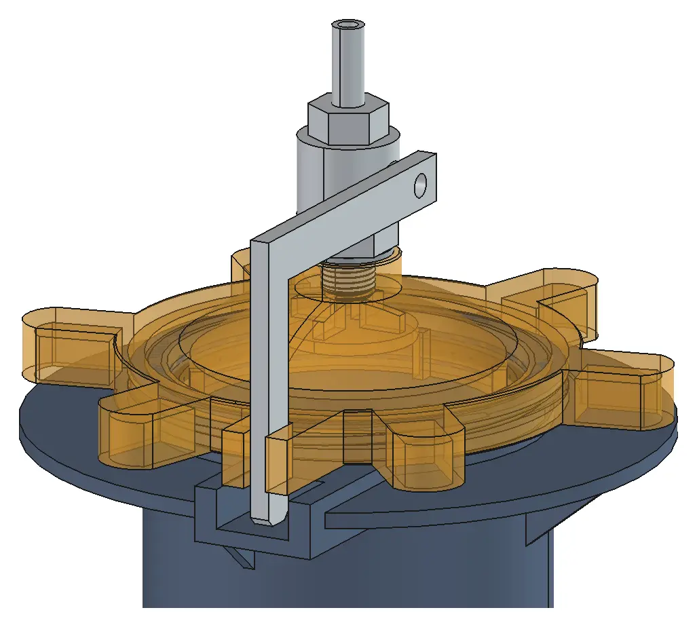
| 濾心 | 膜淨 C10 10 吋（插頭朝下） |
|---|---|
| 主材料 | 本體 PP-GF30；蓋 PPSU 透明琥珀；連鎖把手與三腳座 SS316 |
| 額定流量 | 20 L/min |
| 乾淨壓損 | 0.272 bar（20 °C 水）／0.698 bar（10 °C PG25） |
| 外形 W×D×H | 349 × 302 × 526 mm |
| 乾重 | 約 3.5 kg |
| 零件 | 客製 6／標準 9／外購 4 |
| 工程圖 | 6 張 |
| 強度手算 | 12 bar 時杯體環向 8.8 MPa，低於含熔接線折減的 12 MPa |
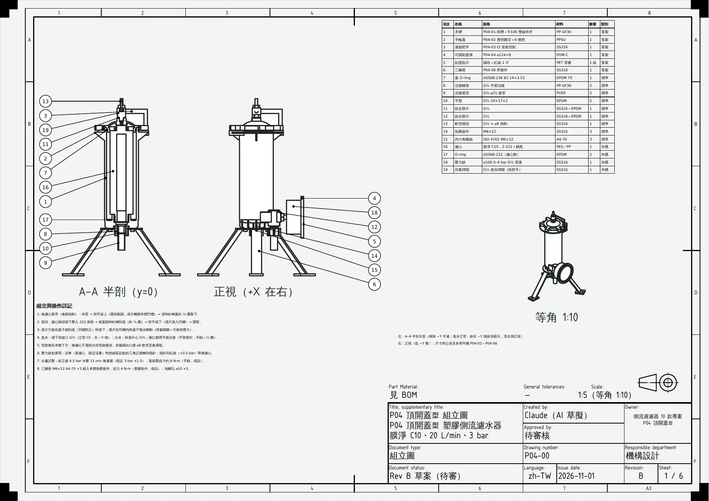
管路支撐 · C10 DOE · 20 L/min
衛生卡箍型
全 PVDF 頭座與杯體用一支 DN80 衛生卡箍合起來；卡箍扣上的同時，刀口就把 DOE 濾心兩端的平墊壓緊。
- 換濾心
- 單螺栓鉸鏈衛生卡箍 DIN 32676 DN80（Ø106），蝶形螺帽免工具；DOE 平墊刀口密封，SS316 波形彈簧補償
- 進出口
- DIN 32676 DN25（Ø50.5）卡箍端 × 2
- 安裝
- 兩個 Ø38 抱箍夾在 DN25 管段上，鎖在 41 × 41 C 型鋼
- 看壽命
- 活塞磁簧差壓開關在 0.7 bar 輸出乾接點；另有兩個迷你卡箍測壓口
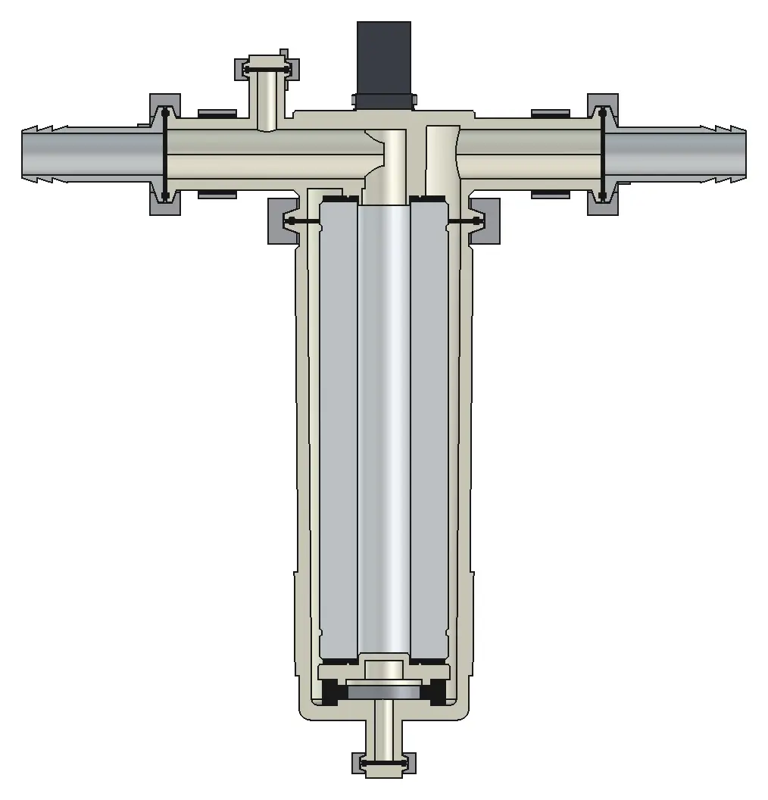
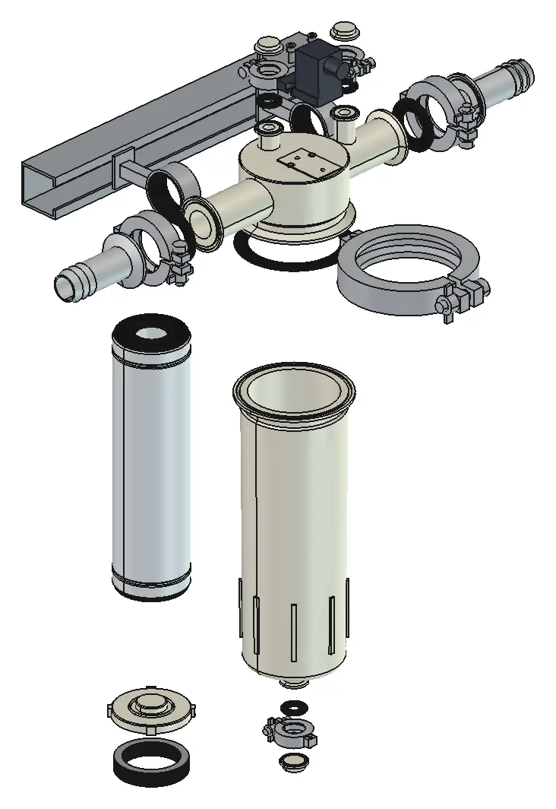
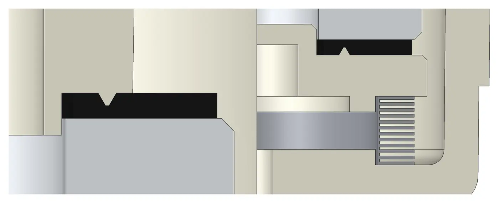
| 濾心 | 膜淨 C10 10 吋 DOE（平墊刀口密封） |
|---|---|
| 主材料 | 濕接件全 PVDF；EPDM；SS316 |
| 額定流量 | 20 L/min |
| 乾淨壓損 | 0.22 bar（20 °C 水）／0.65 bar（10 °C PG25） |
| 外形 W×D×H | 260 × 150 × 403 mm |
| 乾重 | 3.96 kg |
| 零件 | 客製 3／標準 13／外購 3 |
| 工程圖 | 4 張 |
| 強度手算 | 杯底最弱（65 °C 長期 SF 1.36）；推估爆破約 29 bar |
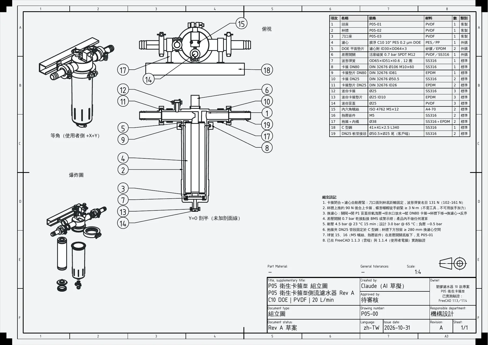
19 吋 3U · C10 · 15 L/min
機架抽屜型
19 吋 3U 抽屜裡臥放一支 PPSU 濾殼，門蓋就開在前面板；扳下一支偏心凸輪扳把，門蓋被拉入 12 mm 並過死點自鎖。
- 換濾心
- 鉸鏈門蓋加單一偏心凸輪扳把：拉鉤扣栓、過死點 3° 自鎖、保險滑塊、兩段式洩壓；不必拉出托盤
- 進出口
- 前面板 2 × OCP UQD08
- 安裝
- EIA-310 19 吋 3U，20 吋全展開滑軌
- 看壽命
- 電子式差壓、超音波流量與液溫、LED 燈條、濾心 NFC 標籤；Modbus RTU／4–20 mA／乾接點輸出
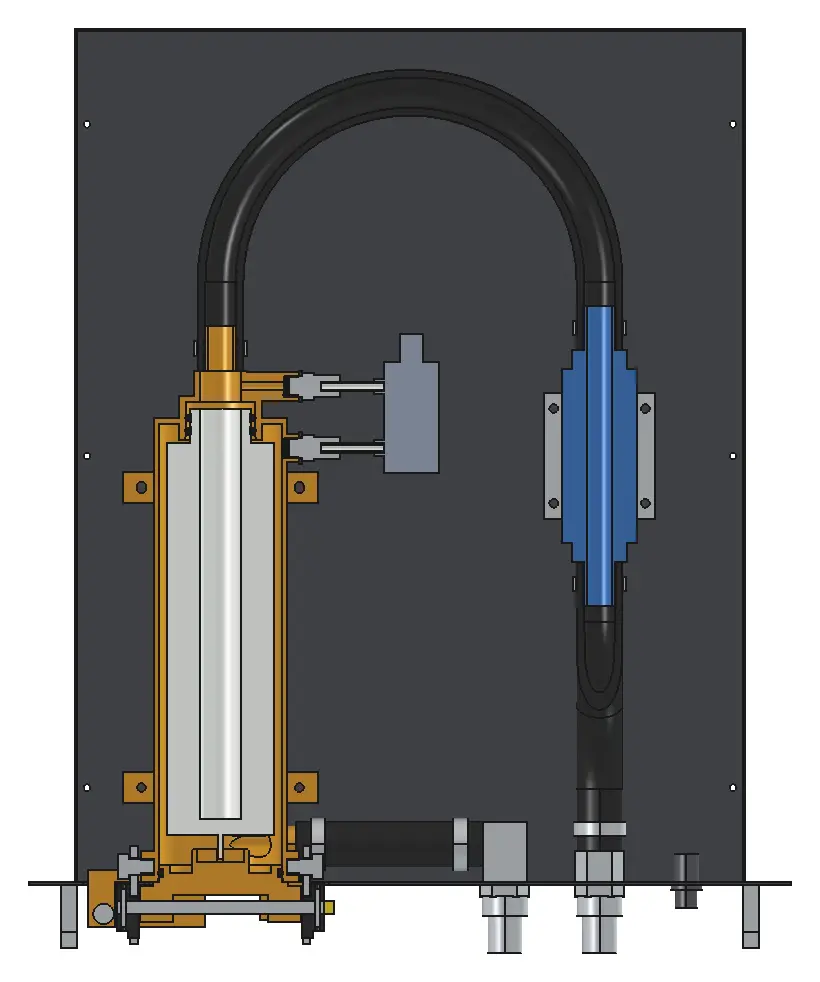
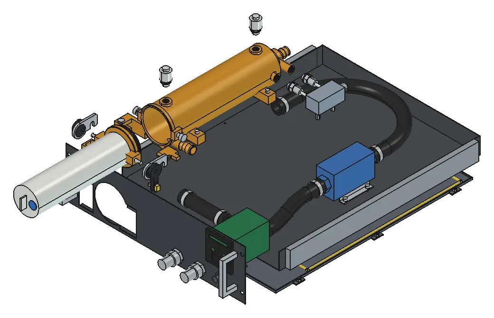
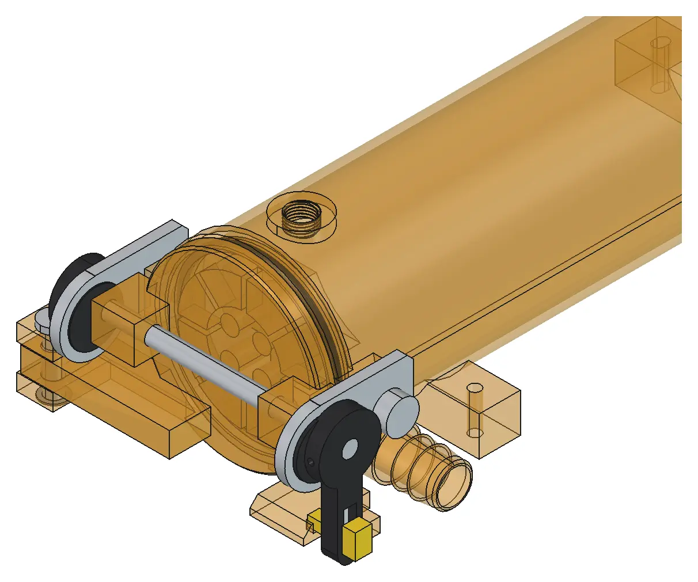
| 濾心 | 膜淨 C10 10 吋（臥裝） |
|---|---|
| 主材料 | 濾殼 PPSU；托盤 SGCC；漏液盤 PP-GF30 |
| 額定流量 | 15 L/min |
| 乾淨壓損 | 0.293 bar（20 °C 水）／0.616 bar（10 °C PG25） |
| 外形 W×D×H | 482.6 × 584.4 × 132.6 mm |
| 乾重 | 約 9.2 kg |
| 零件 | 客製 12／標準 15／外購 19（共 86 件） |
| 工程圖 | 14 張 |
| 強度手算 | 外殼推估爆破 54 bar |
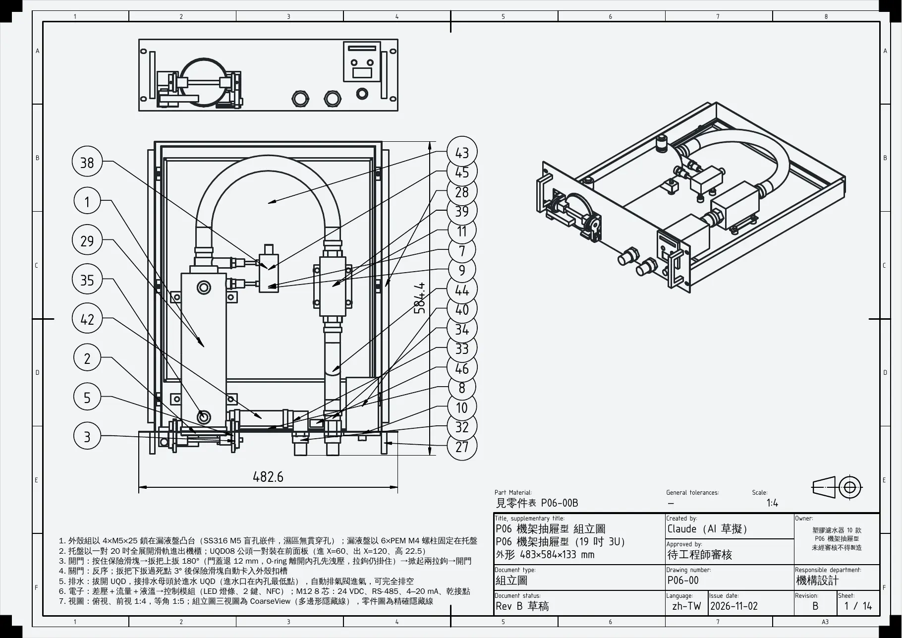
壁掛 · C10 · 10 L/min
反洗延壽型
頭座內建 0.3 L 濾後清水蓄壓器；把手轉到反洗約 3 秒，清水由內往外沖掉濾餅，污泥排到集污瓶。
- 換濾心
- 杯體不轉（2 個止轉鍵），活接旋環 Tr140×6 把杯體拉到硬止擋；徑向 O-ring AS568-346；定位銷加 12 凹槽防鬆
- 進出口
- 一體 19 mm 軟管倒鉤 × 2（每口 2 道管束），加 G½ 排污口
- 安裝
- SS304 壁掛板
- 看壽命
- Ø63 差壓錶讀反洗前後的壓差恢復量，加機械反洗計數器；反洗後仍 ≥ 0.7 bar 就換
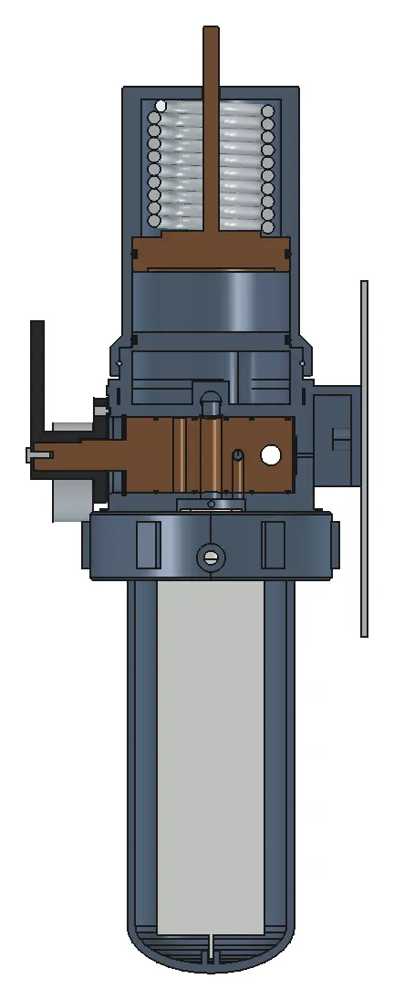
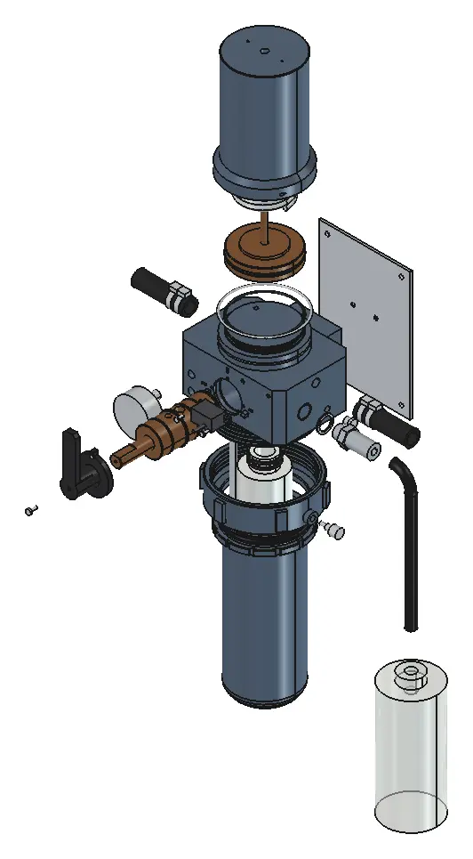
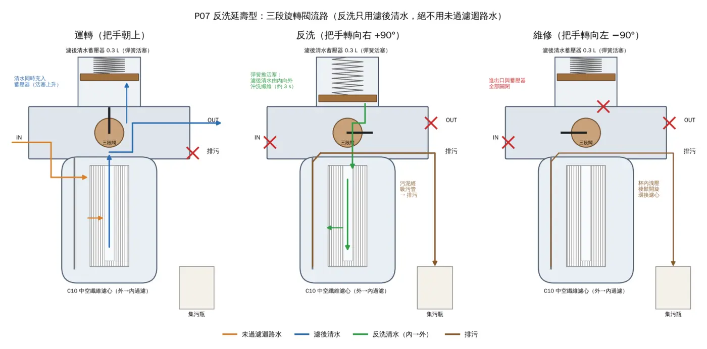
| 濾心 | 膜淨 C10 10 吋（外往內過濾） |
|---|---|
| 主材料 | PP-GF30；閥芯與活塞 PPS-GF40；把手 POM-C；SS316／SS304 |
| 額定流量 | 10 L/min |
| 乾淨壓損 | 0.152 bar（20 °C 水）／0.369 bar（10 °C PG25） |
| 外形 W×D×H | 238 × 216 × 599 mm |
| 乾重 | 約 6.5 kg（含濾心） |
| 零件 | 客製 9／標準 15／外購 10 |
| 工程圖 | 10 張 |
| 強度手算 | 3 bar 時各部位 ≤ 5 MPa；推估爆破 ≥ 54 bar（熔接線折減後約 32 bar） |
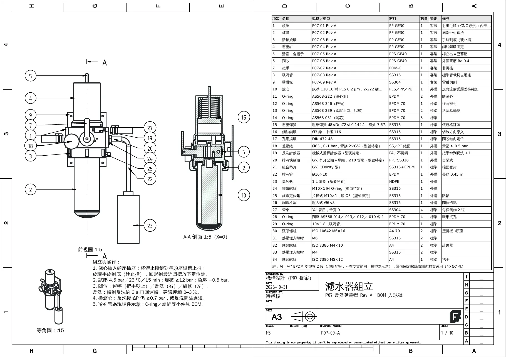
儲液槽頂 · C10 · 15 L/min
槽內沉入型
沒有壓力殼：PP-H 頭座帶著 C10 濾心直接插進 CDU 儲液槽，幫浦從頂端吸水；掀起提把就能整組提出換濾心。
- 換濾心
- 以儲液槽當殼體；徑向 O-ring AS568-236 塞入槽口座環，不鏽鋼鋼絲提把扣住凸耳
- 進出口
- 單一 G¾ 外牙出口穿出槽頂（可選 G¾ 活接 19 mm 倒鉤）
- 安裝
- 儲液槽頂：槽蓋開 Ø97 孔加 6 × M5
- 看壽命
- 複合真空錶（−1 至 +0.6 bar），紅區 −0.50 bar 依幫浦 NPSH 計算
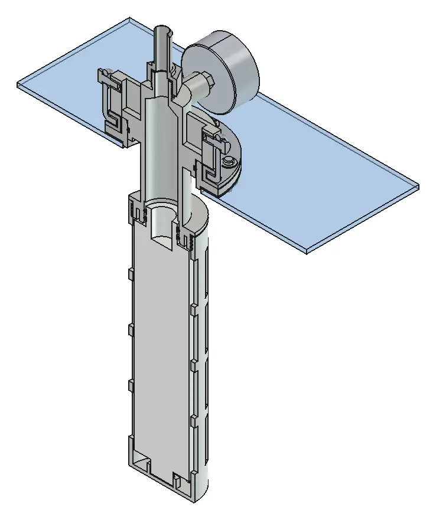
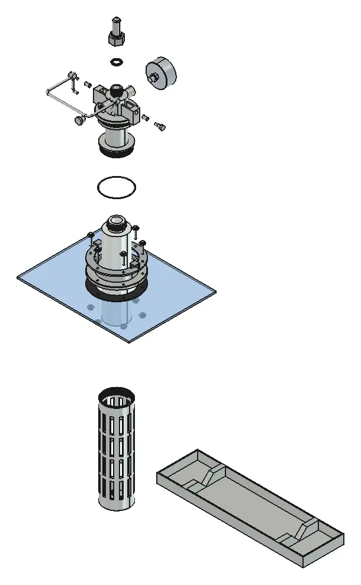
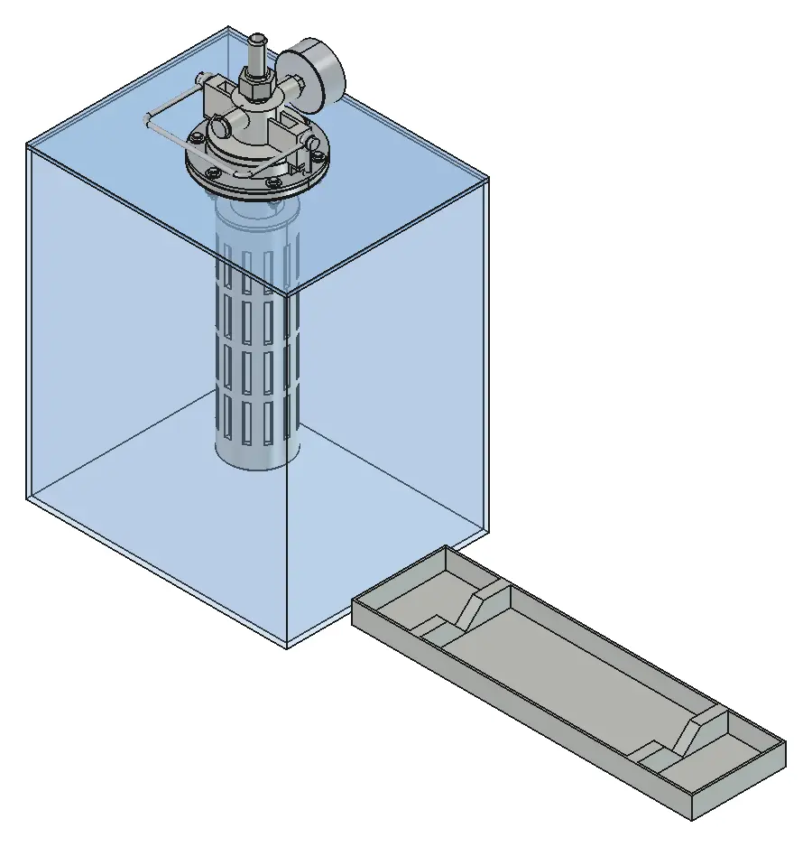
| 濾心 | 膜淨 C10 10 吋（插頭朝上吊掛，孔板護套） |
|---|---|
| 主材料 | 全 PP-H |
| 額定流量 | 15 L/min |
| 乾淨壓損 | 0.175 bar（20 °C 水）／0.494 bar（10 °C PG25） |
| 外形 W×D×H | 158 × 182 × 489 mm |
| 乾重 | 1.33 kg |
| 零件 | 客製 7／標準 8 項 31 件／外購 4 項 5 件 |
| 工程圖 | 8 張 |
| 強度手算 | 下降管外壓挫曲 SF 21；推估爆破約 49 bar（頂板控制） |
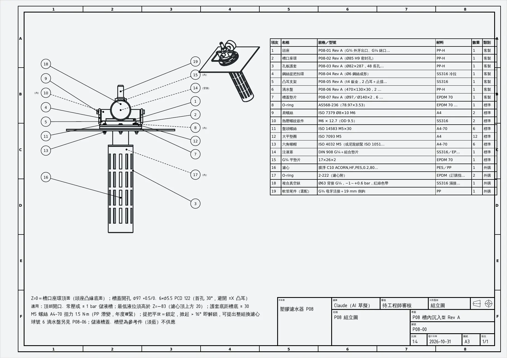
壁掛面板 · CMG · 10 L/min
面板模組型
活接、球閥、過濾器、浮子流量計、旁通與排水全部預裝在一張背板上並試壓好；現場掛 4 顆螺絲、接兩條管就能用。
- 換濾心
- 3 個不鏽鋼肘節扣（附保險扣）加杯口徑向 O-ring，免工具
- 進出口
- G1½ 活接，尾件可換：19 mm 倒鉤／G¾ 內牙／PP 承插 d25
- 安裝
- 整組預裝壁掛背板，4 個葫蘆孔
- 看壽命
- 浮子流量計看流量下降；掉到試車流量的 70 %（紅標記）就換
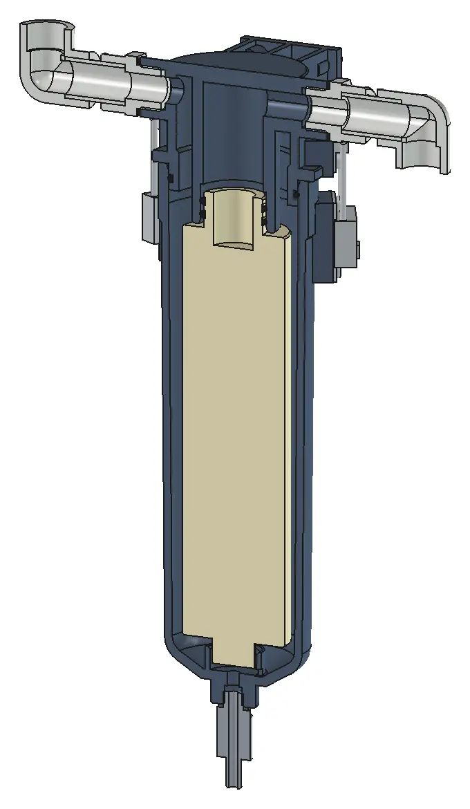
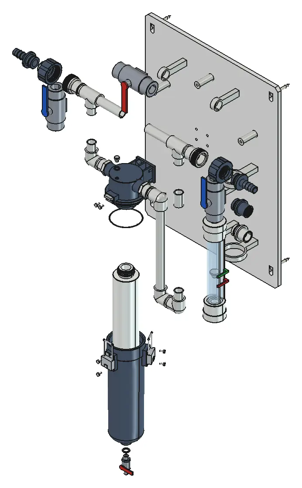
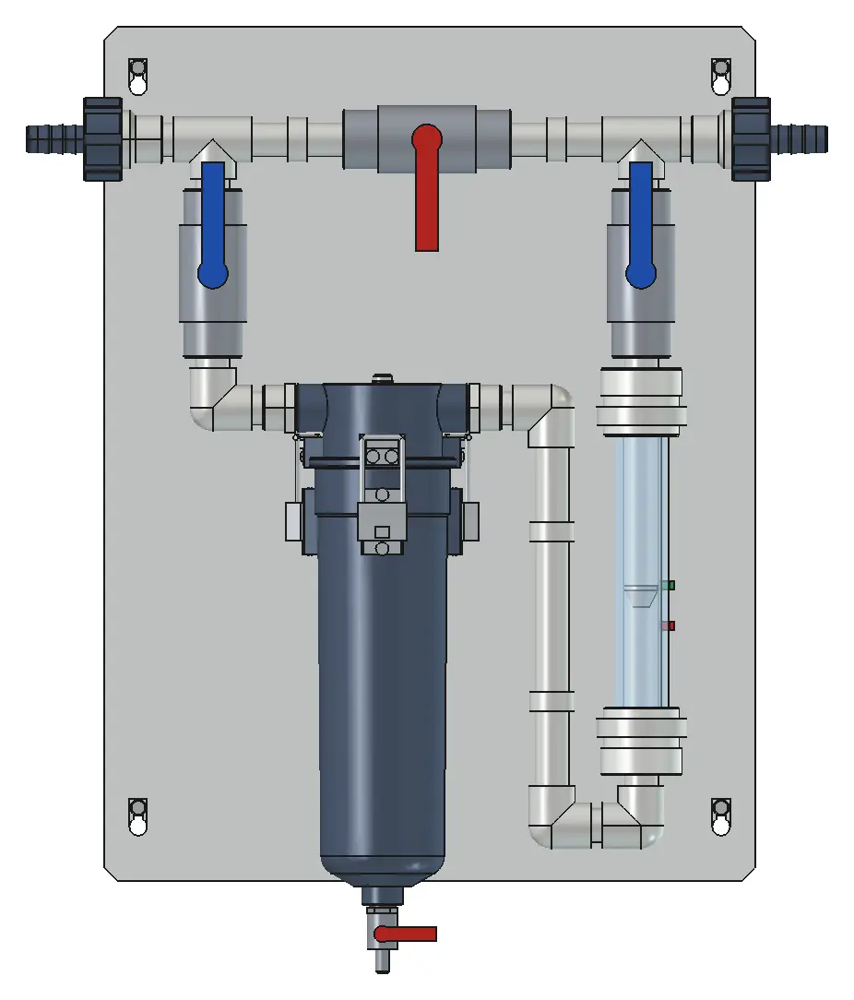
| 濾心 | 膜淨 CMG 10 吋（≤ 40 °C，只裝供水側）；改參數可換 C10（≤ 65 °C） |
|---|---|
| 主材料 | 頭座與杯體 PP-GF30；背板、管路與球閥 PP-H；流量計錐管 PSU |
| 額定流量 | 10 L/min |
| 乾淨壓損 | 0.19 bar（20 °C 水）／0.40 bar（10 °C PG25） |
| 外形 W×D×H | 590 × 161 × 698 mm |
| 乾重 | 約 7.1 kg |
| 零件 | 客製 8／標準 19／外購 8 |
| 工程圖 | 9 張 |
| 強度手算 | 肘節扣每扣 581 N（額定 1500 N，SF 2.58）；12 bar 時最大應力 16.3 MPa |
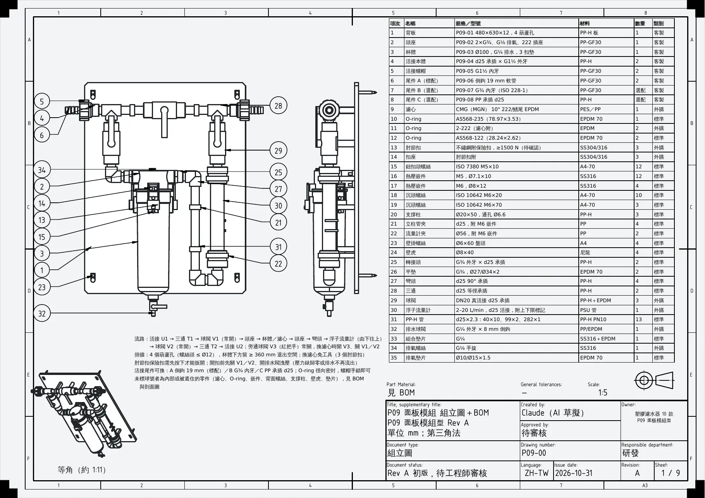
扁平盒 · C48 × 4 · 16 L/min
扁平並聯型
兩支 PPSU 集管之間平躺 4 支 C48 膠囊；每支一把凸輪扳把，扳起時自閉閥先關、插管後脫，其餘 3 支照常過濾。
- 換濾心
- 膠囊本身承壓；扳起扳把，兩端滑套退回 12 mm，自閉提動閥先關再脫開（裕度 2.5 mm）
- 進出口
- 兩集管兩端 G½ 內牙加 ED 端面密封，可同方向串接多台
- 安裝
- 扁平盒高 85.5 mm，PP-GF30 底盤 4 耳 ⌀6.5（M6）
- 看壽命
- 整機差壓錶（預警 0.5／更換 0.7 bar），加每支一個透明轉子視窗，看哪一支變慢
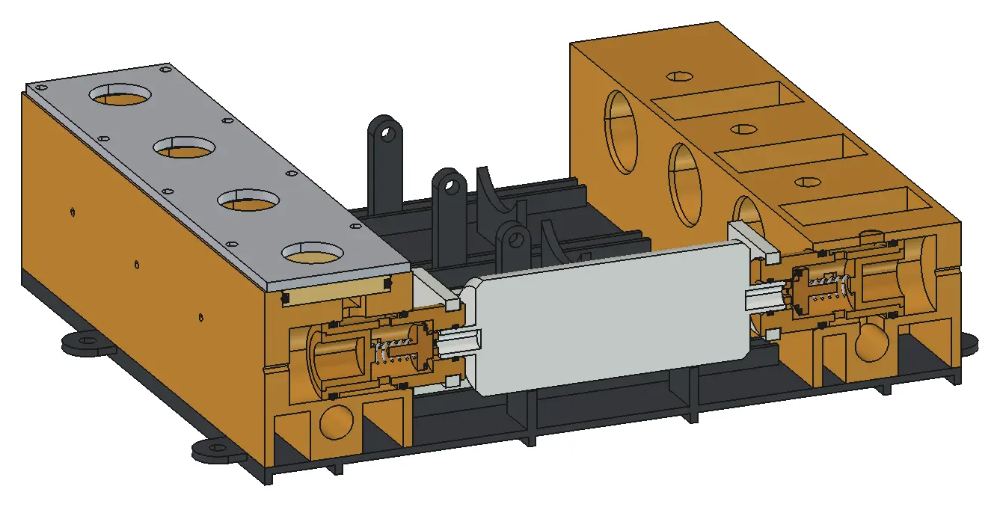
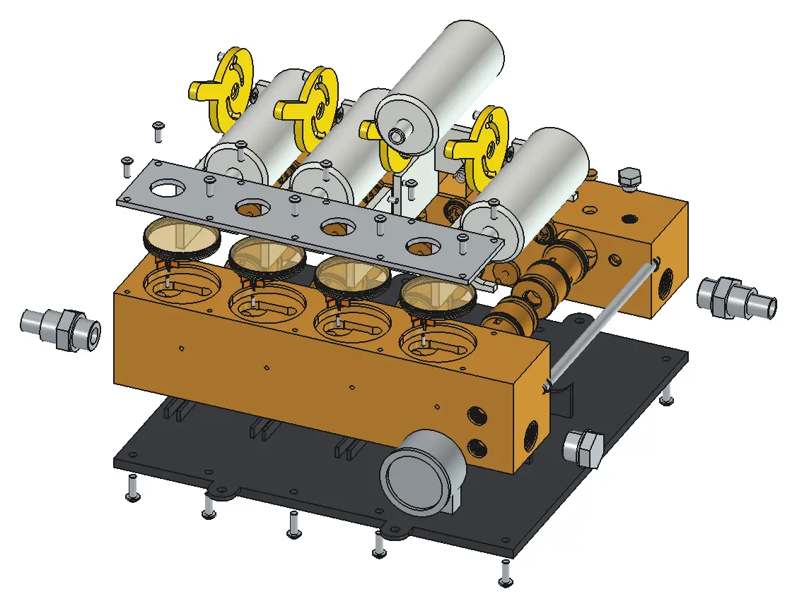
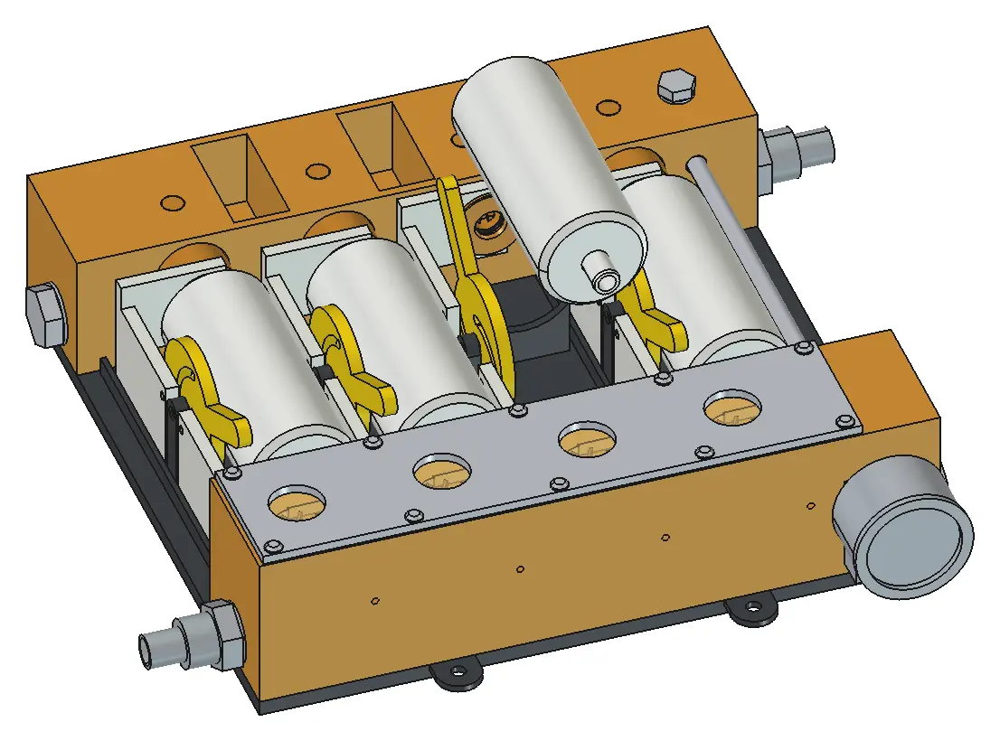
| 濾心 | 膜淨 C48 膠囊 × 4（≤ 40 °C，只裝供水側） |
|---|---|
| 主材料 | 集管、滑套、閥芯、視窗 PPSU；扳把 POM-C；底盤 PP-GF30 |
| 額定流量 | 16 L/min（每支 4） |
| 乾淨壓損 | 0.263 bar（20 °C 水）／0.541 bar（10 °C PG25） |
| 外形 W×D×H | 319 × 355 × 85.5 mm |
| 乾重 | 4.49 kg |
| 零件 | 客製 13 種 52 件／標準 15 種 90 件／外購 3 種 7 件 |
| 工程圖 | 16 張 |
| 強度手算 | 集管最低 SF 14（23 °C 強度）；扳把最大操作力 21.3 N |
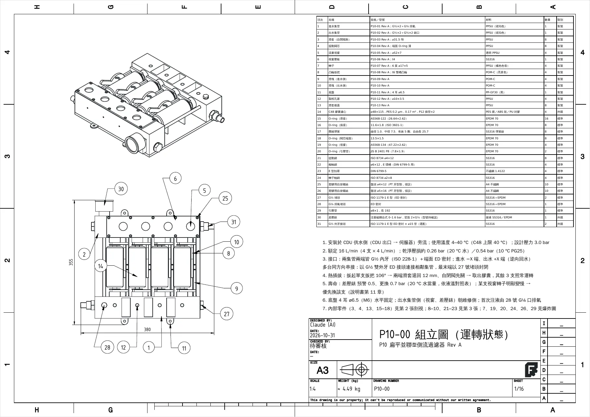